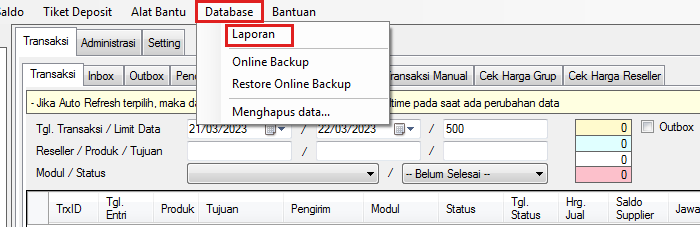
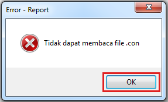
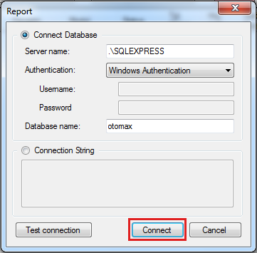
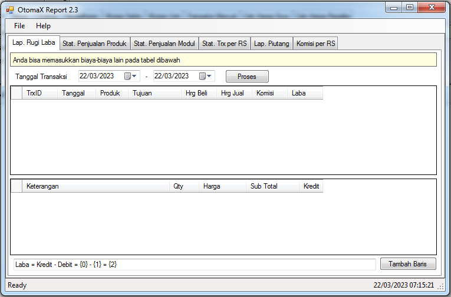

Laporan
Dalam transaksi penjualan biasanya dibutuhkan sebuah laporan rugi laba, statistik penjualan dan yang sejenis. Di OtomaX, terdapat fitur Laporan yang menyajikan data - data tersebut. Untuk dapat mengaksesnya adalah sebagai berikut:
- Pastikan di dalam folder OtomaX atau lokasi instalasi OtomaX Anda telah terdapat file bernama report.exe. Jikalau belum, silahkan download file OtomaX Report dahulu klik disini, lalu extract dan kemudian copy paste file hasil extract di folder OtomaX atau lokasi instalasi OtomaX Anda.
-
Di OtomaX, pilih menu Database -> Laporan

Apabila muncul seperti gambar dibawah ini, klik tombol OK

Apabila muncul seperti gambar dibawah ini, klik tombol Connect

Akan muncul fitur Laporan seperti gambar dibawah ini:

- Selesai.